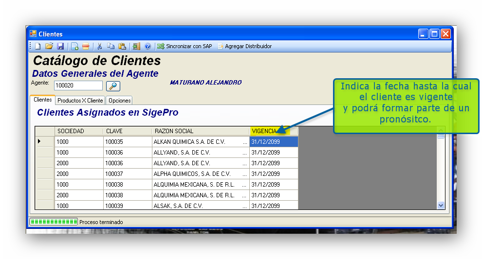
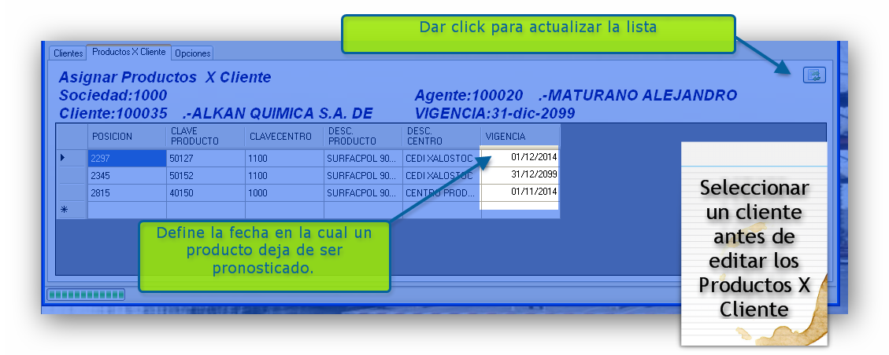

Asignar los clientes y productos que van a ser pronosticados por el agente de ventas
Permite llevar un control del pronóstico de ventas a nivel de clientes y productos que apliquen al centro y area de ventas.


En donde las columnas tienen el siguiente siginificado:
SOCIEDAD: Indica la sociedad de ventas aplicable.
CLAVE:Indica la clave del cliente asignado en SAP
Razón Social: Indica el nombre comercial o razón social del cliente indicado.
Vigencia :Indica la fecha en la cual el cliente ya no es parte de la cartera del vendedor; el sistema actualiza este dato al sincronizar los clientes en SAP.
Vigencia es de especial importancia ya que este dato se actualiza durante el proceso de sincronización y ocurre cada vez que un cliente es asignado o eliminado en SAP,
En la pestaña de Productos X Cliente como la siguiente se deben definir los productos que desea asignar,
considerando el centro suministrador.y la vigencia del producto-cliente asignado ya que un producto dejará de existir en los pronosticos nuevos una vez que se venza la caducidad como se indica a continuacion.
Notas:No olvide guardar sus cambios antes de cambiar de cliente.
En caso de que el producto no aparezca debe validarse primero en SAP utilizando la transaccion MM03 y si existe entonces debe ejecutar la
Sincronización de productos con SAP